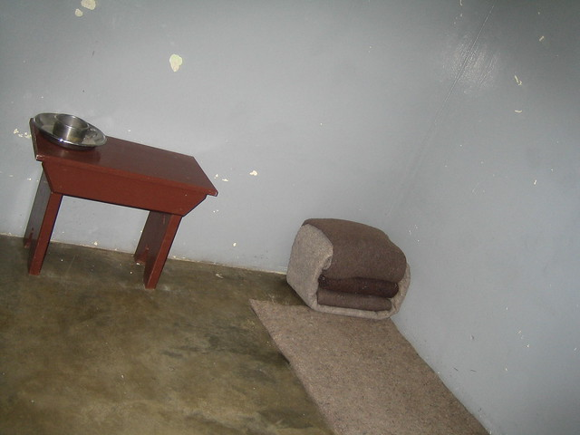
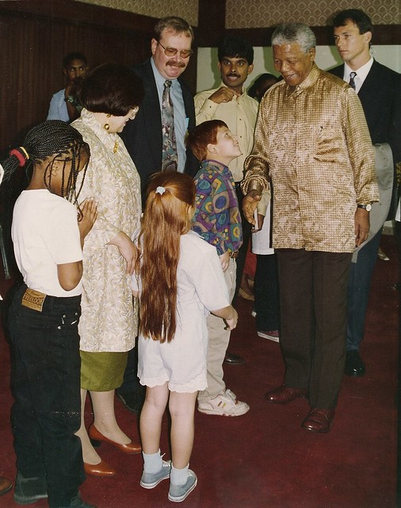

Nelson Mandela
South African anti-apartheid revoutionary

“I learned that courage was not the absence of fear,
but the triumph over it. The brave man is not he who does not feel afraid, but he who conquers that fear.”
----- Nelson Mandela------
Biography
Nelson Mandela was born in Transkei, South Africa on July 18, 1918. He was the son of a local tribal leader of the Tembu tribe. As a youngster, Nelson took part in the activities and initiation ceremonies of his local tribe. However, unlike his father Nelson Mandela gained a full education, studying at the University College of Fort Hare and also the University of Witwatersrand. Nelson was a good student and qualified with a law degree in 1942.
During his time at University, Nelson Mandela became increasingly aware of the racial inequality and injustice faced by non-white people. In 1943, he decided to join the ANC and actively take part in the struggle against apartheid.
As one of the few qualified lawyers, Nelson Mandela was in great demand; also his commitment to the cause saw him promoted through the ranks of the ANC. In 1956, Nelson Mandela, along with several other members of the ANC were arrested and charged with treason. After a lengthy and protracted court case, the defendants were finally acquitted in 1961. However, with the ANC now banned, Nelson Mandela suggested an active armed resistance to the apartheid regime. This led to the formation of Umkhonto we Sizwe, which would act as a guerilla resistance movement. Receiving training in other African countries, the Umkhonto we Sizwe took part in active sabotage.
In 1963, Mandela was again arrested and put on trial for treason. This time the State succeeded in convicting Mandela of plotting to overthrow the government. However, the case received considerable international attention and the apartheid regime of South Africa became under the glare of the international community. At the end of his trial, Nelson Mandela made a long speech, in which he was able to affirm his commitment to the ideals of democracy.
Time in Prison
Mandela’s death sentence was commuted to life imprisonment and from 1964 –1981 he was incarcerated at Robben Island Prison, off Cape Town. In prison the conditions were sparse; however, Mandela was with many other political prisoners, and there was a strong bond of friendship which helped to make more bearable the difficult prison conditions. Also, in prison, Nelson Mandela was highly disciplined; he would try and study and take part in exercise every day. He later said these year of incarceration in jail were a period of great learning, even if painful. Mandela also created friendships with some of the guards. Mandela would later say that he felt he was fighting the apartheid system and not individual white people. It was in prison that Mandela became aware of the passion that Afrikaners had for rugby, and he developed an interest himself.
During his time in prison, Mandela became increasingly well known throughout the world. Mandela became the best known black leader and was symbolic of the struggle against the apartheid regime. Largely unbeknown to Mandela, his continued imprisonment led to a world-wide pressure for his release. Many countries implemented sanctions on apartheid South Africa. Due to international pressure, from the mid-1980s, the apartheid regime increasingly began to negotiate with the ANC and Nelson Mandela in particular. On many occasions, Mandela was offered a conditional freedom. However, he always refused to put the political ideals of the ANC above his own freedom.
Freedom and a new Rainbow Nation

Eventually, Nelson Mandela was released on February 11, 1990. The day was a huge event for South Africa and the world. His release symbolic of the impending end of apartheid. Following his release there followed protracted negotiations to secure a lasting settlement. The negotiations were tense often against the backdrop of tribal violence. However, in April 1994, South Africa had its first full and fair elections. The ANC, with 65% of the vote, were elected and Nelson Mandela became the first President of the new South Africa.